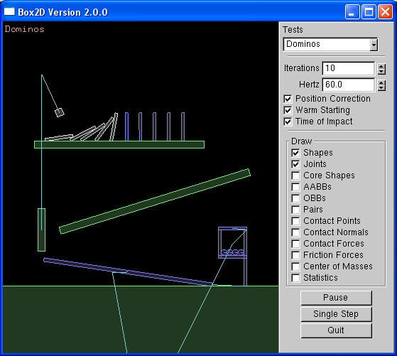
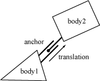
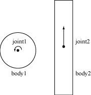

Box2D v2.0.0 User Manual
Erin Catto, 2/17/07
Table of Contents
Introduction
Box2D is a 2D rigid body simulation library for games. Programmer's can use it in their games to make objects move in believable ways and make the world seem more interactive. From the game's point of view a physics engine is just a system for procedural animation. Rather than paying (or begging) an animator to move your actors around, you can let Sir Isaac Newton do the directing.
Box2D is written in portable C++. Most of the types defined in the engine begin with the b2 prefix. Hopefully this is sufficient to avoid name clashing with your game engine.
Prerequisites
In this manual I'll assume you are familiar with basic physics concepts, such as mass, force, torque, and impulses. If not, please first consult the many tutorials provided by Chris Hecker and David Baraff (google these names). You do not need to understand their tutorials in great detail, but they do a good job of laying out the basic concepts that will help you use Box2D.
Wikipedia is also an excellent source of physics and mathematics knowledge. In some ways it is more useful than Google, because it has carefully crafted content.
This is not a prerequisite, but if you are curious about the about the inner workings of Box2D, you can look at these slides.
Since Box2D is written in C++, you are expected to be experienced in C++ programming. Box2D should not be your first C++ programming project. You should be comfortable with compiling, linking, and debugging.
Core Concepts
Box2D works with several fundamental objects. We briefly define these objects here and more details are given later in this document.
- rigid body
- A chunk of matter that is so strong that the distance between any two bits of matter on the chunk is completely constant. They are hard like a diamond. In the following discussion we use body interchangably with rigid body.
- shape
- A 2D piece of collision geometry that is rigidly attached to a body.
- constraint
- A constraint is a physical connection that removes degrees of freedom from bodies. In 2D a body has 3 degrees of freedom. If we take a body and pin it to the wall (like a pendulum) we have constrained the body to the wall. At this point the body can only rotate about the pin, so the constraint has removed 2 degrees of freedom.
- contact constraint
- A special constraint designed to prevent penetration of rigid bodies and to simulate friction and restitution. You will never create a contact constraint, they are created automatically by Box2D.
- joint
- This is a contraint used to hold two or more bodies together. Box2D supports these joint types: revolute, prismatic, distance, and more. Joints may support limits and motors.
- joint limit
- A joint limit restricts the range of motion of a joint. For example, the human elbow only allows a certain range of angles.
- joint motor
- A joint motor drives the motion of the connected bodies according to the joint's degrees of freedom. For example, you can use a motor to drive the rotation of an elbow.
- world
- A physics world is a collection of bodies, shapes, and constraints that interact together. Box2D supports the creation of multiple worlds, but this is usually not necessary or desirable.
Hello Box2D
In the distribution of Box2D is a Hello World project. The program creates a large ground box and a small dynamic box. This code does not contain any graphics, so prepare to be underwelmed. :)
Creating a World
Every Box2D program begins with the creation of a world object. This is the physics hub that manages memory, objects, and simulation.
To create a world object, first we need to define a bounding box for the world. Box2D uses the bounding box to accelerate collision detection. The size isn't critical, but a better fit will improve performance. It is better to make the box too big than to make it too small.
b2AABB worldAABB;
worldAABB.minVertex.Set(-100.0f, -100.0f);
worldAABB.maxVertex.Set(100.0f, 100.0f);
The world AABB should always be bigger then the region where your bodies are located. It is better to make the world AABB too big than too small. If a body reaches the boundary of the world AABB it will be frozen and will stop simulating.
Next we define the gravity vector. Yes, you can make gravity go sideways (or you could just rotate your monitor). Also we tell the world to allow bodies to sleep when they come to rest. A sleeping body doesn't require any simulation.
b2Vec2 gravity(0.0f, -10.0f);
bool doSleep = true;
Now we create the world object. Normally you would create the world on the heap and store the pointer in one of your game structures. However, creating the world on the stack works fine in this example.
b2World world(worldAABB, gravity, doSleep);
So now we have our physics world, let's start adding some stuff to it.
Creating a Ground Box
Bodies are built using the following steps:
- Define a body with a type, position, etc.
- Use the world object to create the body.
- Define a shape with geometry, friction, density, etc.
- Create the shape on the body.
For step 1 we create the ground body. For this we need a body definition. With the body definition we specify the initial position of the body and the body type. Bodies are either dynamic or static. By default, bodies are static, so we don't need to set the body type for the ground body. Static bodies don't collide with other static bodies.
b2BodyDef groundBodyDef;
groundBodyDef.position.Set(0.0f, -10.0f);
For step 2 the body definition is passed to the world object to create the ground body. The world object does not keep a reference to the body definition.
b2Body* ground = world.CreateBody(&groundBodyDef);
For step 3 we create a ground polygon definition. We use the SetAsBox shortcut to form the ground polygon into a box shape, with the box centered on the origin of the parent body.
b2PolygonDef groundShapeDef;
groundShapeDef.SetAsBox(50.0f, 10.0f);
The SetAsBox function takes the half-width and half-height. So in this case the ground box is 100 units wide (x-axis) and 20 units tall (y-axis). Box2D is tuned for meters, kilograms, and seconds. So you can consider the extents to be in meters. However, it is possible to change unit systems, as discussed later in this document
We finish the ground body in step 4 by creating the ground polygon shape on the ground body.
groundBody->CreateShape(&groundShapeDef);
Again, Box2D does not keep a reference to the shape or body definitions. It copies the data into the b2Body structure.
Note that every shape must have a parent body, even shapes that are static. However, you can attach all static shapes to a single static body. This need for static bodies is done to make the Box2D code more uniform internally, reducing the number of potential bugs.
You might notice a pattern here. Most Box2D types are prefixed with b2. This is done to reduce the chance for naming conflicts with your code.
Creating a Dynamic Body
So now we have a ground body. We can use the same technique to create a dynamic body. The main difference, besides dimensions, is that we must establish the dynamic body's mass properties.
First we create the body. We must set the type to dynamic (the default is static).
b2BodyDef bodyDef;
bodyDef.type = b2BodyDef::e_dynamicBody;
bodyDef.position.Set(0.0f, 4.0f);
b2Body* body = world.CreateBody(&bodyDef);
Next we create and attach a polygon shape. Notice that we set density to 1. The default density is zero. Also, the friction on the shape is set to 0.3. Once the shape is attached, we instruct the body to compute it's mass properties from the attached shapes using the method SetMassFromShapes. This gives you a hint that you can attach more than one shape per body. If the computed mass is zero, then the body becomes truly static. Bodies have a mass of zero by default, that's why we didn't need to call SetMassFromShapes for the ground body.
b2PolygonDef shapeDef;
shapeDef.SetAsBox(1.0f, 1.0f);
shapeDef.density = 1.0f;
shapeDef.friction = 0.3f;
body->CreateShape(&shapeDef);
body->SetMassFromShapes();
That's it for initialization. We are now ready to begin simulating.
Simulating the World (of Box2D)
So we have initialized the ground box and a dynamic box. Now we are ready to set Newton loose to do his thing. We just have a couple more issues to consider.
Box2D uses a bit of numerical code called an integrator. Integrators simulation the physics equations at discrete points of time. This goes along with the traditional game loop where we essentially have a flip book of movement on the screen. So we need to pick a time step for Box2D. Generally physics engines for games like a time step at least as fast as 60Hz or 1/60 seconds. You can get away with larger time steps, but you will have to be more careful about setting up the definitions for your world. We also don't like the time step to change much. So don't tie the time step to your frame rate (unless you really, really have to). Without further ado, here is the time step.
float32 timeStep = 1.0f / 60.0f;
In addition to the integrator, Box2D also uses a larger bit of code called a constraint solver. The constraint solver solves all the constraints in the simulation, one at a time. A single constraint can be solved perfectly. However, when we solve one constraint, we slightly disrupt other constraints. To get a good solution, we need to iterate over all constraints a number of times. The suggested iteration count for Box2D is 10. You can tune this number to your liking, just keep in mind that this has a trade-off between speed and accuracy. Using fewer iterations increases performance but accuracy suffers. Likewise, using more iterations decreases performance but improves the quality of your simulation. Here is our chosen iteration count.
int32 iterations = 10;
We are now ready to begin the simulation loop. In your game the simulation loop can be merged with your game loop. In each pass through your game loop you call b2World::Step. Just one call is usually enough, depending on your frame rate and your physics time step.
The Hello World program was designed to be dead simple, so it has no graphical output. Rather that being utterly boring by producing no output, the code prints out the position and rotation of the dynamic body. Yay! Here is the simulation loop that simulates 60 time steps for a total of 1 second of simulated time.
for (int32 i = 0; i < 60; ++i)
{
world.Step(timeStep, iterations);
b2Vec2 position = body->GetPosition();
float32 angle = body->GetAngle();
printf("%4.2f %4.2f %4.2f\n", position.x, position.y, angle);
}
Cleanup
When a world leaves scope or is deleted by calling delete on a pointer, all the memory reserved for bodies and joints is freed. This is done to make your life easier. However, you will need to nullify any body or joint pointers you have because they will become invalid.
The Testbed
Once you have conquered the HelloWorld example, you should start looking at Box2D's testbed. The testbed is a unit-testing framework and demo environment. Here are some of the features:
- Camera with pan and zoom.
- Mouse picking of shapes attached to dynamic bodies.
- Extensible set of tests.
- GUI for selecting tests, parameter tuning, and debug drawing options.
- Pause and single step simulation.
- Text rendering.

The testbed has many examples of Box2D usage in the test cases and the framework itself. I encourage you to explore and tinker with the testbed as you learn Box2D.
Note: the testbed is written using freeglut and GLUI. The testbed is not part of the Box2D library. Box2D is agnostic about rendering. As shown by the HelloWorld example, you don't need a renderer to use Box2D.
API Design
Memory Management
A large number of the decisions about the design of Box2D were based on the need for quick and efficient use of memory. In this section I will discuss how and why Box2D allocates memory.
Box2D tends to allocate a large number of small objects (around 50-300 bytes). Using the system heap through malloc or new for small objects is inefficient and can cause fragmentation. Many of these small objects may have a short life span, such as contacts, but can persist for several time steps. So we need an allocator that can efficiently provide heap memory for these objects.
Box2D's solution is to use a small block allocator (SBA). The SBA keeps a number of growable pools of varying sizes. When a request is made for memory, the SBA returns a block of memory that best fits the requested size. When a block is freed, it is returned to the pool. Both of these operations are fast and cause little heap traffic.
Since Box2D uses a SBA, you should never new or malloc a body, shape, or joint. The only Box2D object that you allocate yourself is a b2World. The b2World class provides factories for you to create bodies, shapes, and joints. This allows Box2D to use the SBA and hide the gory details from you. Never, ever, call delete or free on a body, shape, or joint.
While executing a time step, Box2D needs some temporary workspace memory. For this, it uses a stack allocator to avoid per-step heap allocations. You don't need to interact with the stack allocator, but it's good to know it's there.
Factories and Definitions
As mentioned above, memory management plays a central role in the design of the Box2D API. So when you create a b2Body or a b2Joint, you need to call the factory functions on b2World.
There are creation functions:
b2Body* b2World::CreateBody(const b2BodyDef* def)
b2Joint* b2World::CreateJoint(const b2JointDef* def)
And there are corresponding destruction functions:
void b2World::DestroyBody(b2Body* body)
void b2World::DestroyJoint(b2Joint* joint)
When you create a body or joint, you need to provide a definition or def for short. These definitions contain all the information needed to build the body or joint. By using this approach we can prevent construction errors, keep the number of function parameters small, provide sensible defaults, and reduce the number of accessors.
Since shapes musted be parented to a body, they are created and destroyed using a factory method on b2Body:
b2Shape* b2Body::CreateShape(const b2ShapeDef* def)
void b2Body::DestroyShape(b2Shape* shape)
Factories do not retain references to the definitions. So you can create definitions on the stack and keep them in temporary resources.
User Data
The b2Shape, b2Body, and b2Joint classes allow you to attach user data as a void*. This is handy when you are examining Box2D data structures and you want to determine how they relate to the data structures in your game engine.
For example, it is typical to attach an actor pointer to the rigid body on that actor. This sets up a circular reference. If you have the actor, you can get the body. If you have the body, you can get the actor.
GameActor* actor = GameCreateActor();
b2BodyDef bodyDef;
bodyDef.userData = actor;
actor->body = box2Dworld->CreateBody(&bodyDef);
Here are some examples of cases where you would need the user data:
- Applying damage to an actor using a collision result.
- Playing a scripted event if the player is inside an axis-aligned box.
- Accessing a game structure when Box2D notifies you that a joint is going to be destroyed.
Keep in mind that user data is optional and you can put anything in it. However, you should be consistent. For example, if you want to store an actor pointer on one body, you should keep an actor pointer on all bodies. Don't store an actor pointer on one body, and a foo pointer on another body. This will likely lead to a crash if you try to cast an actor pointer into a foo pointer.
Dealing with C++
C++ is great for encapsulation and polymorphism, but it's not so great for API design. There are always significant trade-offs when creating a C++ library.
Should we use abstract factories or the pimpl idiom? These make the API look cleaner, but they ultimately get in the way of debugging and efficient development.
Should we use private data and friends as necessary? Perhaps, but eventually the number of friends can become ridiculous.
Should we just wrap the C++ code with a C-API? Perhaps, but this is extra work and may lead to internal choices that are non-optimal. Also, C-APIs are harder to debug and maintain. A C-API also breaks encapsulation.
For Box2D I have chosen the path of least resistance. For some cases a class is well contained in its design and function, so I use public functions and private data. For everything else I use classes or structs with all public members. These choices let me develop the code rapidly, it is easy to debug, and it creates minimal internal clutter while maintaining tight encapsulation. The downside is that you don't see a clean, simple API. Of course, you have this nice manual to help you out. :)
Strawman
If you don't like this API design, that's ok! You have the source code! Seriously, if you have feedback about anything related to Box2D, please write a note in the forum.
The World
The b2World class contains the bodies and joints. It manages all aspects of the simulation and allows for asynchronous queries (like AABB queries). Much of your interactions with Box2D will be with a b2World object.
Creating and Destroying a World
Creating a world is fairly simple. You need to provide a bounding box and a gravity vector.
The axis-aligned bounding box should encapsulate the world. You can improve performance by making the bounding box a bit bigger than your world, say 2x just to be safe. If you have lots of bodies that fall into the abyss, your should detect this and remove the bodies. This will improve performance and prevent floating point overflow.
To create and destory a world you need to use new and delete.
b2World* myWorld = new b2World(aabb, gravity, doSleep);
... do stuff ...
delete myWorld;
Recall that the world AABB should always be bigger then the region where your bodies are located. If bodies leave the world AABB, then they will be frozen. This is not a bug.
Using a World
The world class contains factories for creating and destroying bodies and joints. These factories are discussed later in the sections on bodies and joints. There are some other interactions with b2World that I will cover now.
Simulation
The world class is used to drive the simulation. You specify a time step and an iteration count. For example:
float32 timeStep = 1.0f / 60.f;
int32 iterationCount = 10;
myWorld->Step(timeStep, iterationCount);
After the time step you can examine your bodies and joints for information. Most likely you will grab the position off the bodies so that you can update your actors and render them. You can perform the time step anywhere in your game loop, but you should be aware of the order of things. For example, you must create bodies before the time step if you want to get collision results for the new bodies in that frame.
As I discussed above in the HelloWorld tutorial, you should use a fixed time step. By using a larger time step you can improve performance in low frame rate scenarios. But generally you should use a time step no larger than 1/30 seconds. A time step of 1/60 seconds will usually deliver a high quality simulation.
The iteration count controls how many times the constraint solver sweeps over all the contacts and joints in the world. More iterations always yields a better simulation. But don't trade a small time step for a large iteration count. 60Hz and 10 iterations is far better than 30Hz and 20 iterations.
Exploring the World
As mentioned before, the world is a container for bodies and joints. You can grab the body and joint lists off the world and iterate over them. For example, this code wakes up all the bodies in the world:
for (b2Body* b = myWorld->GetBodyList(); b; b = b->GetNext())
{
b->WakeUp();
}
AABB Queries
Sometimes you want to determine all the shapes in a region. The b2World class has a fast log(N) method for this using the broad-phase data structure. You provide an AABB in world coordinates and b2World returns an array of all the shapes that potentially intersect the AABB. This is not exact because what the function actually does is return all the shapes whose AABBs intersect the specified AABB. For example, the following code finds all the shapes that potentially intersect a specified AABB and wakes up all of the associated bodies.
b2AABB aabb;
aabb.minVertex.Set(-1.0f, -1.0f);
aabb.maxVertex.Set(1.0f, 1.0f);
const int32 k_bufferSize = 10;
b2Shape *buffer[k_bufferSize];
int32 count = myWorld->Query(aabb, buffer, k_bufferSize);
for (int32 i = 0; i < count; ++i)
{
buffer[i]->GetBody()->WakeUp();
}
Bodies
Bodies have position and velocity. You can apply forces, torques, and impulses to bodies. Bodies can be static or dynamic. Static bodies never move and don't collide with other static bodies.
Bodies are the backbone for shapes. Bodies carry shapes and move them around in the world. Bodies are always rigid bodies in Box2D. That means that two shapes attached to the same rigid body never move relative to each other.
You usually keep pointers to all the bodies you create. This way you can query the body positions to update the positions of your graphical entities. You should also keep body pointers so you can destroy them when you are done with them.
The Body Definition
Before a body is created you must create a body definition (b2BodyDef). You can create a body definition on the stack or build it into your game's data structures. The choice is up to you.
Box2D copies the data out of the body definition, it does not keep a pointer to the body definition. This means you can recycle a body definition to create multiple bodies.
Lets go over some of the key members of the body definition.
Static and Dynamic Bodies
By default bodies are static. Static bodies don't move and they don't collide with other bodies. Static bodies are often used to represent static environments in games, like the floor and walls. By convention, static bodies have zero mass.
Dynamic bodies move around and have positive mass. Dynamic bodies must be specified in the body definition. If you don't specify that a body is dynamic, the body won't move.
bodyDef.type = b2BodyDef::e_dynamicBody;
Mass Properties
There are a few ways to establish the mass properties for a body.
- Set the mass properties explicitly in the body definition.
- Set the mass properties explicitly on the body (after it has been created).
- Set the mass properties based on the density of the attaced shapes.
In many game scenarios it makes sense to compute mass based on shape densities. This helps to ensure that bodies have reasonable and consistent mass values.
However, other game scenarios may require specific mass values. For example, you may have a mechanism, like a scale that needs precises mass values.
You can explicitly set the mass properties in the body definition as follows:
bodyDef.massData.mass = 2.0f; // the body's mass in kg
bodyDef.center.SetZero(); // the center of mass in local coordinates
bodyDef.I = 3.0f; // the rotational inertia in kg*m^2.
The other methods of setting the mass properties are covered elsewhere in this document.
Position and Angle
The body definition gives you the chance to initialize the position of the body on creation. This has better performance than creating the body at the world origin and then moving the body.
A body has two main points of interest. The first point is the body's origin. Shapes and joints are attached relative to the body's origin. The second point of interest is the center of mass. The center of mass is determined from mass distribution of the attached shapes or is explicitly set with b2MassData. Much of Box2D's internal computations use the center of mass position. For example b2Body stores the linear velocity for the center of mass.
When you are building the body definition, you may not know where the center of mass is located. Therefore you specify the position of the body's origin. You may also specify the body's angle in radians, which is not affected by the position of the center of mass. If you later change the mass properties of the body, then the center of mass may move on the body, but the origin position does not change and the attached shapes and joints do not move.
bodyDef.position.Set(0.0f, 2.0f); // the body's origin position.
bodyDef.angle = 0.25f * b2_pi; // the body's angle in radians.
Damping
Damping is used to reduce the world velocity of bodies. Damping is different than friction because friction only occurs with contact and damping is much cheaper to simulate than friction. However, damping is not a replacement for friction and the two effects should be used together.
Damping parameters should be between 0 and infinity, with 0 meaning no damping, and infinity meaning full damping. Normally you will use a damping value between 0 and 0.1. I generally do not use linear damping because it makes bodies look floaty.
bodyDef.linearDamping = 0.0f;
bodyDef.angularDamping = 0.01f;
Damping is approximated for stability and performance. At small damping values the damping effect is mostly independent of the time step. At larger damping values, the damping effect will vary with the time step. This is not an issue if you use a fixed time step (recommended).
Sleep Parameters
What does sleep mean? Well it is expensive to simulate bodies, so the less we have to simulate the better. When a body comes to rest we would like to stop simulating it.
When Box2D determines that a body (or group of bodies) has come to rest, the body enters a sleep state which has very little CPU overhead. If an awake body collides with a sleeping body, then the sleeping body wakes up. Bodies will also wake up if a joint or contact attached to them is destroyed. You can also wake a body manually.
The body definition lets you specify whether a body can sleep and whether a body is created sleeping.
bodyDef.allowSleep = true;
bodyDef.isSleeping = false;
Bullets
Game simulation usually generates a sequence of images that are played at some frame rate. In this setting rigid bodies can move by a large amount in one time step. If a physics engine doesn't account for the large motion, you may see some objects incorrectly pass through each other. This effect is called tunneling.
By default, Box2D uses continuous collision detection (CCD) to prevent dynamic bodies from tunneling through static bodies. This is done by sweeping shapes from their old position to their new positions. The engine looks for new collisions during the sweep and computes the time of impact (TOI) for these collisions. Bodies are moved to their first TOI and then simulated to the end of the original time step. This process is repeated as necessary.
Normally CCD is not used between dynamic bodies. This is done to keep performance reasonable. In some game scenarios you need dynamic bodies to use CCD. For example, you may want to shoot a high speed bullet at a thin wall. Without CCD, the bullet my tunnel through the wall.
Fast moving objects in Box2D are called bullets. You should decide what bodies should be bullets based on your game design. If you decide a body should be treated as a bullet, use the following setting.
bodyDef.isBullet = true;
CCD is expensive so you probably don't want all moving bodies to be bodies. So by default Box2D only uses CCD between moving bodies and static bodies. This is an effective approach to prevent bodies from escaping your game world. However, you may have some fast moving bodies that that require CCD all the time.
Creating and Destroying a Body
Bodies are created and destroyed using a body factory provided by the world class. This lets the world create the body with an efficient allocator and add the body to the world data structure.
b2Body* body = myWorld->CreateBody(&bodyDef);
... do stuff ...
myWorld->DestroyBody(body);
body = NULL;
Never use new or malloc to create a body. The world won't know about the body and the body won't be properly initialized.
Box2D does not keep a reference to the body definition or any of the data it holds (except user data pointers). So you can create temporary body definitions and reuse the same body definitions.
Box2D allows you to avoid destroying bodies by deleting your b2World object, which does all the cleanup work for you. However, you should be mindful to nullify and body pointers that you keep in your game engine.
When you destroy a body all its attached shapes, joints, and contacts are destroyed. This is called implicit destruction. Any body connected to one of those joints and/or contacts is woken. There is mostly very convenient for you. However, you must be aware of one crucial issue:
When a body is destroyed, any joints attached to the body are automatically destroyed. You must nullify any pointers you have to those joints. Otherwise, your program will die horribly if you try to destroy that joint later.
To help you nullify your joint pointers, Box2D provides a listener class named b2WorldListener that you can implement and provide to your world object. Then the world object will notify you when a joint is going to be implicity destroyed.
Static and Dynamic Bodies
Bodies that move around are called dynamic and bodies that are fix are called static. Both static and dynamic bodies can have shapes. If you use the default shape density of 0, then you will get a static body, otherwise you'll get a dynamic body.
In principle, you could use a single static body for your world by attaching possibly many shapes to it. This will not improve performance much, but it can save a bit of memory. The choice is yours. The maximum number of shapes per body is determined by b2_maxShapesPerBody which has a default value of 64.
Suppose you want to connect a dynamic body to ground with a joint. You'll need to connect the joint to a static body. If you don't have a static body, you can get a shared static body from your world object.
b2Body* ground = myWorld->GetGroundBody();
... build a joint using the ground body ...
Using a Body
Using a body is fairly straightforward. You can set and get the position and rotation of a body. You can set and get the position of the body's origin or its center of mass. You can set and get its velocities.
void SetOriginPosition(const b2Vec2& position, float32 rotation);
b2Vec2 GetOriginPosition() const;
void SetCenterPosition(const b2Vec2& position, float32 rotation);
b2Vec2 GetCenterPosition() const;
float32 GetRotation() const;
const b2Mat22& GetRotationMatrix() const;
void SetLinearVelocity(const b2Vec2& v);
b2Vec2 GetLinearVelocity() const;
void SetAngularVelocity(float32 w);
float32 GetAngularVelocity() const;
Usually you should not set a body's velocity to constrain its motion. To constrain a body, use joints, shapes, forces, and impulses.
You can apply forces, torques, and impulses to a body. When you apply a force or an impulse, you provide a world point where the load is applied. This often results in a torque about the center of mass.
void ApplyForce(const b2Vec2& force, const b2Vec2& point);
void ApplyTorque(float32 torque);
void ApplyImpulse(const b2Vec2& impulse, const b2Vec2& point);
Keep in mind that the only body function that wakes it is b2Body::WakeUp. Applying forces does not wake a body. This is done so that bodies under static load can sleep. For example, you may wish to increase the gravity on a body by applying a steady downward force. There is no reason to prevent this body from going to sleep. If you want to apply a force to a body and ensure that it reacts, you must wake the body first.
The body class has some utility functions to help you transform points and vectors between local and world space. If you don't understand these concepts, please read "Essential Mathematics for Games and Interactive Applications" by Jim Van Verth and Lars Bishop. These functions are efficient, so use them with impunity.
b2Vec2 GetWorldPoint(const b2Vec2& localPoint);
b2Vec2 GetWorldVector(const b2Vec2& localVector);
b2Vec2 GetLocalPoint(const b2Vec2& worldPoint);
b2Vec2 GetLocalVector(const b2Vec2& worldVector);
You can iterate over a body's shapes. This is useful if you want to draw collision geometry in a debug mode.
for (b2Shape* s = body->GetShapeList(); s; s = s->GetNext())
{
GameDrawShape(s);
}
Shapes
Shapes are the collision geometry attached to bodies. Shapes are also used to define the mass of a body. This lets you specify the density and let Box2D do the work of computing the mass properties.
Shapes have properties of friction and restitution. Shapes carry collision filtering information to let you prevent collisions between some of your game objects.
Shapes are always owned by a body. You can attach multiple shapes to a single body. Shapes are abstract classes so that many types of shapes can be implemented in Box2D. If you are brave, you can implement your own shape type (and collision algorithms). So how are shapes defined?
The Shape Definition
Shapes do not exist on their own and you cannot create a shape directly. Instead you specify a shape definition that contains all the construction data for a shape. Then you attached the shape definition to a body definition, which in turn is used to create a body. When the body is created the body definition is examined for shape definitions and the corresponding shapes are created and attached to the new body. This may seem a bit convoluted, but it really makes life easier, for me and you.
Box2D supports three types of shape definitions: circles, boxes, and convex polygons. Internally, Box2D creates a convex polygon for boxes. This simplifies the collision code. I encourage you to look at b2Shape.h for all the shape definition parameters. But don't worry, I will cover most of them here.
Once the associated body is constructed, Box2D does not keep a pointer to your shape definitions. Instead Box2D copies all the data out of the shape definition. So you can create shape definitions on the stack and you can use a single shape definition to spawn multiple shape instances. A caveat is that the user data on the shape definition would be shared by multiple shapes, which is often not desirable.
Local Position and Rotation
Every shape is attached to a body and you are free to attach a shape with any position and rotation. In the shape definition you specify the local position and local rotation that will be used to attach the shape to the body. This really comes in handy when you have have compound shapes.
Compounds shapes are multiple shapes that share the same body. An example is a dumbbell with a circle on each end. The following code snippet shows how to setup shape definitions for a dumbbell.
b2CircleDef circle1, circle2;
circle1.localPosition.Set(-1.0f, 0.0f);
circle2.localPosition.Set(1.0f, 0.0f);
b2BodyDef bodyDef;
bodyDef.AddShape(&circle1);
bodyDef.AddShape(&circle2);
You don't need to worry about compound shapes colliding with each other. Box2D automatically ignores collisions between shapes on the same body.
Friction and Restitution
Friction is used to make objects slide along each other realistically. Box2D supports static and dynamic friction, but uses the same parameter for both. Friction is simulated accurately in Box2D and the friction strength is proportional to the normal force (this is called Coulomb friction). The friction parameter is usually set between 0 and 1. A value of zero turns off friction and a value of one makes the friction strong. When the friction is computed between two shapes, Box2D must combine the friction parameters of the two shapes. This is done with the following formula:
float32 friction;
friction = sqrtf(shape1->friction * shape2->friction);
Restitution is used to make objects bounce. The restitution value is usually set to be between 0 and 1. Consider dropping a ball on a table. A value of zero means the ball won't bounce. This is called an inelastic collision. A value of one means the ball's velocity will be exactly reflected. This is called a perfectly elastic collision. Restitution is combined using the following formula.
float32 restitution;
restitution = b2Max(shape1->restitution, shape2->restitution);
When a shape develops multiple contacts, restitution is simulated approximately. This is because Box2D uses an iterative solver. Box2D also uses inelastic collisions when the collision velocity is small. This is done to prevent jitter.
Density
Box2D computes the mass and rotational inertia of bodies using the mass distribution implied by the attached shapes. Specifying mass values directly can often lead to poorly tuned simulations. Therefore, the mass density per unit area is specified in the shape definition. You can override mass values in b2Body, but there is currently no API for this.
Collision Filtering
Collision filtering is a system for preventing collision between shapes. For example, say you make a character that rides a bicycle. You want the bicycle to collide with the terrain and the character to collide with the terrain, but you don't want the character to collide with the bicycle (because they must overlap). Box2D supports such collision filtering using categories and groups.
Box2D supports 16 collision categories. For each shape you can specify which category it belongs to. You also specify what other categories this shape can collide with. For example, you could specify in a multiplayer game that all players don't collide with each other and monsters don't collide with each other, but players and monsters should collide. This is done with masking bits. For example:
playerShapeDef.categoryBits = 0x0002;
monsterShapeDef.categoryBits = 0x0004;
playerShape.maskBits = 0x0004;
monsterShapeDef.maskBits = 0x0002;
Collision groups let you specify an integral group index. You can have all shapes with the same group index always collide (positive index) or never collide (negative index). Group indices are usually used for things that are somehow related, like the parts of a bicycle. In the following example, shape1 and shape2 always collide, but shape3 and shape4 never collide.
shape1Def.groupIndex = 2;
shape2Def.groupIndex = 2;
shape3Def.groupIndex = -8;
shape4Def.groupIndex = -8;
Collisions between shapes of different group indices are filtered according the category and mask bits. In other words, group filtering has higher precendence than category filtering.
Note that additional collision filtering occurs in Box2D. Here is a list:
- shapes on static bodies never collide
- shapes on the same body never collide
- your can optionally enable/disable collision between bodies connected by a joint
Circle Definitions
b2CircleDef extends b2ShapeDef and adds a radius. The origin of a circle is its center.
Box Definitions
b2BoxDef extends b2ShapeDef and adds an extents vector. Assuming the y-axis is up in your game, the extents vector is defined this way:
b2BoxDef boxDef;
boxDef.extents.x = width / 2.0f;
boxDef.extents.y = height / 2.0f;
The origin of a box is its center.
Internally, Box2D does not implement a box shape. Instead, a box definition is used to create a convex polygon.
Polygon Definitions
b2PolyDef is used to implement convex polygons. They are a bit tricky to use correctly, so please read closely. The maximum vertex count is defined by b2_maxPolyVertices which is currently 8. If you need to use more vertices, you must modify b2_maxPolyVertices in b2Settings.h.
When you build a polygon definition you must specify the number of vertices you will use. The vertices must be specified in counter-clockwise (CCW) order. Also, the polygon must be convex. In other words, each vertex must point outwards to some degree. Finally, you must not overlap any vertices. Box2D will automatically close the loop.
A future version of Box2D will provide a tool to automatically create a convex polygon from a set of points, so you won't have to be so careful.
Here is an example of a polygon definition of a triangle:
b2PolyDef triangleDef;
triangleDef.vertexCount = 3;
triangleDef.vertices[0].Set(-1.0f, 0.0f);
triangleDef.vertices[1].Set(1.0f, 0.0f);
triangleDef.vertices[2].Set(0.0f, 2.0f);
The polygon vertices should generally be centered around the origin, but this is not necessary. The origin of the polygon shape is defined implicitly by its vertices.
(Not) Creating and Destroying a Shape
We don't need to discuss shape creation or destruction because this is handled automatically by Box2D. You should never try to create or destory a shape. You should never hold onto a shape pointer, because the body may be removed somewhere else in your game code.
You can let shape definitions go out of scope because Box2D copies the data. Box2D does not hold a reference to your shape definitions. This lets you recycle shape definitions as you create bodies.
Using a Shape
There's not much to say here. You can get a shape's type, its parent body, and its world position. You can also test a point to see if it is contained within the shape. Look at b2Shape.h for details.
Joints
Joints are used to constrain bodies to the world or to each other. Typical examples in games include ragdolls, teeters, and pulleys. Joints can be combined in many different ways to create interesting motions.
Some joints provide limits so you can control the range of motion. Some joint provide motors which can be used to drive the joint at a prescribed speed until a prescribed force/torque is exceeded.
Joint motors can be used in many ways. You can use motors to control position by specifying a joint velocity that is proportional to the difference between the actual and desired position. You can also use motors to simulate joint friction: set the joint velocity to zero and provide a small, but significant maximum motor force/torque. Then the motor will attempt to keep the joint from moving until the load becomes too strong.
The Joint Definition
Each joint type has a definition that derives from b2JointDef. All joints are connected between two different bodies. One body may static. If you want to waste memory, then create a joint between two static bodies. :)
You can specify user data for any joint type and you can provide a flag to prevent the attached bodies from colliding with each other. This is actually the default behavior and you must set the collideConnected Boolean to allow collision between to connected bodies.
The rest of the joint definition data depends on the joint type. We cover these now.
Distance Joint
One of the simplest joint is a distance joint which says that the distance between two points on two bodies must be constant. When you specify a distance joint the two bodies should already be in place. Then you specify the two anchor points in world coordinates. The first anchor point is connected to body 1, and the second anchor point is connected to body 2. These points imply the length of the distance constraint.

Here is an example of a distance joint definition. In this case we decide to allow the bodies to collide and we place the anchor points at the respective center of mass positions.
b2DistanceJointDef jointDef;
jointDef.body1 = myBody1;
jointDef.body2 = myBody2;
jointDef.collideConnected = true;
jointDef.anchorPoint1 = myBody1->GetCenterPosition();
jointDef.anchorPoint2 = myBody2->GetCenterPosition();
Revolute Joint
A revolute joint forces two bodies to share a common anchor point, often called a hinge point. The revolute joint has a single degree of freedom: the relative rotation of the two bodies. This is called the joint angle.

To specify a revolute you need to provide two bodies and a single anchor point in world space. Box2D assumes that the bodies are already in the correct position.
In this example, two bodies are connected by a revolute joint at the first body's center of mass.
b2RevoluteJointDef jointDef;
jointDef.body1 = myBody1;
jointDef.body2 = myBody2;
jointDef.anchorPoint = myBody1->GetCenterPosition();
The revolute joint angle is positive when body2 rotates CCW about the anchor point. Like all angles in Box2D, the revolute angle is measured in radians. By convention the revolute joint angle is zero when the joint is created, regardless of the current rotation of the two bodies.
In some cases you might wish to control the joint angle. For this, the revolute joint can optionally simulate a joint limit and/or a motor.
A joint limit forces the joint angle to remain between an lower and upper bound. The limit will apply as much torque as needed to make this happen. The limit range should include zero, otherwise the joint will lurch when the simulation begins.
A joint motor allows you to specify the joint speed (the time derivative of the angle). The speed can be negative or positive. A motor can have infinite force, but this is usually not desirable. Have you ever heard the expression:
"What happens when an irresistible force meets an immovable object?"
I can tell you it's not pretty. So you can provide a maximum torque for the joint motor. The joint motor will maintain the specified speed unless the required torque exceeds the specified maximum. When the maximum torque is exceeded, the joint will slow down and can even reverse.
You can use a joint motor to simulate joint friction. Just set the joint speed to zero, and set the maximum torque to some small, but significant value. The motor will try to prevent the joint from rotating, but will yield to a significant load.
Here's a revision of the revolute joint definition above; this time the joint has a limit and a motor enabled. The motor is setup to simulate joint friction.
b2RevoluteJointDef jointDef;
jointDef.body1 = myBody1;
jointDef.body2 = myBody2;
jointDef.anchorPoint = myBody1->GetCenterPosition();
jointDef.lowerAngle = -0.5f * b2_pi; // -90 degrees
jointDef.upperAngle = 0.25f * b2_pi; // 45 degrees
jointDef.enableLimit = true;
jointDef.motorTorque = 10.0f;
jointDef.motorSpeed = 0.0f;
jointDef.enableMotor = true;
Prismatic Joint
A prismatic joint allows for relative translation of two bodies along a specified local axis. A prismatic joint prevents relative rotation. Therefore, a prismatic joint has a single degree of freedom.

The prismatic joint definition is similar to the revolute joint description; just substitute translation for angle and force for torque. Using this analogy provides an example prismatic joint definition with a joint limit and a friction motor:
b2PrismaticJointDef jointDef;
jointDef.body1 = myBody1;
jointDef.body2 = myBody2;
jointDef.anchorPoint = myBody1->GetCenterPosition();
jointDef.axis.Set(1.0f, 0.0f);
jointDef.lowerTranslation = -5.0f;
jointDef.upperTranslation = 2.5f;
jointDef.enableLimit = true;
jointDef.motorForce = 1.0f;
jointDef.motorSpeed = 0.0f;
jointDef.enableMotor = true;
The revolute joint has an implicit axis coming out of the screen. The prismatic joint needs an explicit axis parallel to the screen. This axis is fixed in the two bodies and follows their motion.
Like the revolute joint, the prismatic joint translation is zero when the joint is created. So be sure zero is between your lower and upper translation limits.
Pulley Joint
A pulley is used to create an idealized pulley. The pulley connects two bodies to ground and to each other. As one body goes up, the other goes down. The total length of the pulley rope is conserved according to the initial configuration.
length1 + length2 == constant

You can supply a ratio that simulates a block and tackle. This causes one side of the pulley to extend faster than the other. At the same time the constraint force is smaller on one side than the other. You can use this to create mechanical leverage.
length1 + ratio * length2 == constant
For example, if the ratio is 2, then length1 will vary at twice the rate of length2. Also the force in the rope attached to body1 will have half the constraint force as the rope attached to body2.
Pulleys can be troublesome when one side is fully extended. The rope on the other side will have zero length. At this point the constraint equations become singular (bad). Therefore the pulley joint constrains the maximum length that either side can attain. Also, you may want to control the maximum lengths for gameplay reasons. So the maximum lengths improve stability and give you more control.
Here is an example pulley definition:
b2Vec2 p1 = myBody1->GetCenterPosition();
b2Vec2 p2 = myBody2->GetCenterPosition();
b2PulleyJointDef jointDef;
jointDef.body1 = myBody1;
jointDef.body2 = myBody2;
jointDef.anchorPoint1 = p1;
jointDef.anchorPoint2 = p2;
jointDef.groundPoint1.Set(p1.x, p1.y + 10.0f);
jointDef.groundPoint2.Set(p2.x, p2.y + 12.0f);
jointDef.ratio = 1.0f;
jointDef.maxLength1 = 18.0f;
jointDef.maxLength2 = 20.0f;
Gear Joint
If you want to create a sophisticated mechanical contraption you might want to use a gears. In priciple you can create gears in Box2D by using compound shapes to model gear teeth. This is not very efficient and might be tedious to author. You also have to be careful to line up the gears so the teeth mesh smoothly. Box2D has a simpler method of creating gears: the gear joint.

The gear joint requires the you have two bodies connected to ground by a revolute or prismatic joint. You can use any combination of those joint types. Also, Box2D requires that the revolute and prismatic joints were created with the ground as body1.
Like the pulley ratio, you can specify a gear ratio. However, in this case the gear ratio can be negative. Also keep in mind that when one joint is a revolute joint (angular) and the other joint is prismatic (translation), then the gear ratio with have units of length or one over length.
coordinate1 + ratio * coordinate2 == constant
Here is an example gear joint:
b2GearJointDef jointDef;
jointDef.body1 = myBody1;
jointDef.body2 = myBody2;
jointDef.joint1 = myRevoluteJoint;
jointDef.joint2 = myPrismaticJoint;
jointDef.ratio = 2.0f * b2_pi / myLength;
Note that the gear joint depends on two other joints. This creates a fragile situation. What happens if those joints are deleted?
Always delete gear joints before the revolute/prismatic joints on the gears. Otherwise your code will crash in a bad way due to the orphaned joint pointers in the gear joint. You should also delete the gear joint before you delete any of the bodies involved.
Mouse Joint
The mouse joint is used to drag bodies around in the test-bed. It will probably be revised in the future, so I will not go into details about this joint yet.
Creating and Destroying a Joint
Joints are created and destroyed using the world factor methods. This brings up an old issue:
Don't try to create a body or joint on the stack or on the heap using new or malloc. You must create and destroy bodies and joints using the create and destroy methods of the b2World class.
Here's an example of the lifetime of a revolute joint:
b2RevoluteJointDef jointDef;
jointDef.body1 = myBody1;
jointDef.body2 = myBody2;
jointDef.anchorPoint = myBody1->GetCenterPosition();
b2RevoluteJoint* joint = myWorld->CreateJoint(&jointDef);
... do stuff ...
myWorld->DestroyJoint(joint);
joint = NULL;
It is always good to nullify your pointer after they are destroyed. This will make the program crash in a controlled manner if you try to reuse the pointer.
Orphaned Joints
The lifetime of a joint is not simple. Heed this warning well:
Joints are destroyed when an attached body is destroyed. You should implement a b2WorldListener class so that you can nullify your joint pointers when they are implicitly destroyed.
This precaution is not always necessary. You may organize your game engine so that joints are always destroyed before the attached bodies. In this case you don't need to implement the listener class.
Using a Joint
Many simulations create the joints and don't access them again until they are detroyed. However, there is a lot of useful data contained in joints that you can use to create a rich simulation.
First of all, you can get the bodies, anchor points, and user data from a joint.
b2Body* GetBody1();
b2Body* GetBody2();
b2Vec2 GetAnchor1();
b2Vec2 GetAnchor2();
void* GetUserData();
All joints have a reaction force and torque. This the reaction force applied to body 2 at the anchor point. You can use reaction forces to break joints or trigger other game events. You must provide the inverse time step to get the reaction forces because Box2D stores the reaction impulses. These functions may do some computations, so don't call them if you don't need the result.
b2Vec2 GetReactionForce(float32 invTimeStep);
float32 GetReactionTorque(float32 invTimeStep);
Using a Distance Joint
Distance joints don't have motors, so there are no extra runtime methods for distance joints.
Using a Revolute Joint
You can access a revolute joint's angle, speed, and motor torque.
float32 GetJointAngle() const;
float32 GetJointSpeed() const;
float32 GetMotorTorque(float32 invTimeStep) const;
You also update the motor parameters each step.
void SetMotorSpeed(float32 speed);
void SetMotorTorque(float32 torque);
Joint motors have some interesting abilities. You can update the joint speed every time step so you can make the joint move back-and-forth like a sine-wave or according to whatever function you want.
... Game Loop Begin ...
myJoint->SetMotorSpeed(cosf(0.5f * time));
... Game Loop End ...
You can also use joint motors to track a desired joint angle. For example:
... Game Loop Begin ...
float32 angleError = myJoint->GetJointAngle() - angleTarget;
float32 gain = 0.1f;
myJoint->SetMotorSpeed(-gain * angleError);
... Game Loop End ...
Generally your gain parameter should not be too large. Otherwise your joint may become unstable.
Using a Prismatic Joint
Using a prismatic joint is similar to using a revolute joint. Here are the relevant member functions:
float32 GetJointTranslation() const;
float32 GetJointSpeed() const;
float32 GetMotorForce(float32 invTimeStep) const;
void SetMotorSpeed(float32 speed);
void SetMotorForce(float32 force);
Using Pulley Joints
Pully joints provide the current lengths.
float32 GetLength1() const;
float32 GetLength2() const;
Using Gear Joints
Gear joints don't provide any information beyond the functions defined in b2Joint.
Contacts
Introduction
Contacts are objects created by Box2D to manage collision between shapes. There are different kinds of contacts, derived from b2Contact, for managing contact between different kinds of shapes. For example there is a contact class for managing polygon-polygon collision and another contact class for managing circle-circle collision. This is normally not important to you, I just thought you might like to know.
Here is some terminlogy associated with contacts. This terminology is particular to Box2D, but you might find similar terminology in other physics engines.
- contact
- An object that manages contact between a pair of shapes over a number of time steps. A contact object is present while the two shapes' axis-aligned bounding boxes overlap.
- contact manifold
- A contact object will create contact manifold objects when the shape pair actually touches. A manifold has a single normal vector and up to two contact points. The idea is that there is some one dimensional region where the two convex 2D shapes overlap. Multiple manifolds are possible when a convex shape collides with a non-convex shape (like a line segment soup).
- contact point
- A contact point belongs to a contact manifold and position, separation, impulses, and a feature based id. The contact's normal vector is held in it's parent manifold.
- contact separation
- Separation is the opposite of penetration. Separation is negative when shapes overlap. You can assume that Box2D will only have contact points with zero or negative separation.
- contact impulses
- Box2D use a Sequential Impulse solver and stores the results with the contact points. You can safely use the impulse values to guage the collision intensity. For example, you can use the impulses to trigger breakables or to play collision sounds.
- contact ids
- Box2D tries to use the contact impulses from one time step as the initial guess for the next time step. Box2D uses contact ids to match contact points across time steps. The ids contain geometric features indices that help to distinguish one contact point from another.
Contacts are created when two shape's AABBs overlap. Sometimes collision filtering will prevent the creation of contacts. Box2D sometimes needs to create a contact even though the collision is filtered. In this case it uses a b2NullContact that prevents collision from occuring. Contacts are destroyed with the AABBs cease to overlap.
So you might gather that there may be contacts created for shapes that are not touching (just their AABBs). Well, this is correct. It's a "chick or egg" problem. We don't know if we need a contact object until one is created to analyze the collision. We could delete the contact right away if the shapes are not touching, or we can just wait until the AABBS stop overlapping. Box2D takes the latter approach.
Contact Listener
Box2D has a simple approach to contact callbacks: it doesn't have any. Why is this? Well, Box2D stores all the contact points across time steps, so you can access the data any time you like. Normally, you will look at contact points after a time step.
As you traverse the contact objects, you might decide to destroy a body. For example, when a vehicle hits a wall, you might want to destroy the wall. Normally, this creates a buggy situation because the contact object you are processing needs to be destroyed when you destroy one of the bodies involved. Box2D has a solution for this problem.
Box2D does not destroy bodies immediately. When you destroy a body, Box2D removes it from the world body list and adds it to a deferred destruction list. The body is actually destroyed the next time you call b2World::Step.
Processing Contacts
Here is a snippet from the test CollisionProcessing. The code iterates over all the contacts and for shapes that are touching, it will destroy the lighter parent body. Note that with Box2D's deferred body destruction, the same body might be destroyed more than once.
for (b2Contact* c = m_world->GetContactList(); c; c = c->GetNext())
{
if (c->GetManifoldCount() > 0)
{
b2Body* body1 = c->GetShape1()->GetBody();
b2Body* body2 = c->GetShape2()->GetBody();
float32 mass1 = body1->GetMass();
float32 mass2 = body2->GetMass();
if (mass1 > 0.0f && mass2 > 0.0f)
{
if (mass2 > mass1)
{
m_world->DestroyBody(body1);
body1 = NULL;
}
else
{
m_world->DestroyBody(body2);
body2 = NULL;
}
}
}
}
Contact Filtering
Often in a game you don't want all objects to collide. For example, you may want to create a door that only certain characters can pass through. This is called contact filtering, because some interactions are filtered out.
Box2D allows you to achieve custom contact filtering by implementing a b2ContactFilter class. This class requires you to implement a ShouldCollide function that receives two b2Shape pointers. Your function returns true if the shapes should collide.
The default implementation of ShouldCollide uses category, mask, and group information defined in the shapes section.
World Boundary
You can implement a b2BoundaryListener that allows b2World to inform you when a body has gone outside the world AABB. When you get the callback, you shouldn't try to delete the body, instead you should mark the parent actor for deletion or error handling. After the physics time step, you should handle the event.
class MyBoundaryListener : public b2BoundaryListener
{
void Violation(b2Body* body)
{
MyActor* myActor = (MyActor*)body->GetUserData();
myActor->MarkForErrorHandling();
}
};
You can then register an instance of your boundary listener with your world object. You should do this during world initialization.
myWorld->SetListener(myBoundaryListener);
Implicit Destruction
Box2D doesn't use reference counting. So if you destroy a body it is really gone. Accessing a pointer to a destroyed body has undefined behavior. In other words, your program will likely crash and burn. To help fix these problems, the debug build memory manager fills destroyed entities with FDFDFDFD. This can help find problems more easily in some cases.
If you destroy a Box2D entity, it is up to you to make sure you remove all references to the destroyed object. This is easy if you only have a single reference to the entity. If you have multiple references, you might consider implementing a handle class to wrap the raw pointer.
Often when using Box2D you will create and destroy many bodies, shapes, and joints. Managing these entities is somewhat automated by Box2D. If you destroy a body then all associated shapes and joints are automatically destroyed. This is called implicit destruction.
Implicit destruction is a great convenience in many cases. It can also make your program fall apart. You may store pointers to shapes and joints somewhere in your code. These pointers become orphaned when an associated body is destroyed. The situation becomes worse when you consider that joints are often created by a part of the code unrelated to management of the associated body. For example, the testbed creates a b2MouseJoint for interactive manipulation of bodies on the screen.
Box2D provides a callback mechanism to inform your application when implicit destruction occurs. This gives your application a chance to nullify the orphaned pointers. This callback mechanism is described later in this manual.
You can implement a b2DestructionListener that allows b2World to inform you when a shape or joint is implicitly destroyed because an associated body was destroyed. This will help prevent your code from accessing orphaned pointers.
class MyDestructionListener : public b2DestructionListener
{
void SayGoodbye(b2Joint* joint)
{
// remove all references to joint.
}
};
You can then register an instance of your destruction listener with your world object. You should do this during world initialization.
myWorld->SetListener(myDestructionListener);
Behind the Scenes
Collision System
Incremental sweep and prune.
Polygon collision
Dynamics
Body-joint-contact graph
Islands
SI solver
NSI solver
Settings
Units
Collision settings
Dynamics settings
References
Open Issues